Fatigue analysis estimates the damage that repeated or fluctuating stresses accumulate in a component. These estimates help engineers assess service life and make informed material and design choices. This article uses a synthetic stress history to demonstrate the analysis workflow, from identifying stress cycles to estimating their contribution to total damage.
Strength and Failure
Strength is commonly characterized by the tensile yield stress, $\sigma_\mathrm{y}$, at which plastic deformation initiates and unrestricted plastic flow begins. It may also be expressed in terms of the ultimate tensile stress, $\sigma_\mathrm{ult}$, the maximum stress attained following yielding and substantial plastic deformation. Strain hardening is typically accompanied by an increase in strength until the ultimate tensile stress is reached, as illustrated in Figure 1.
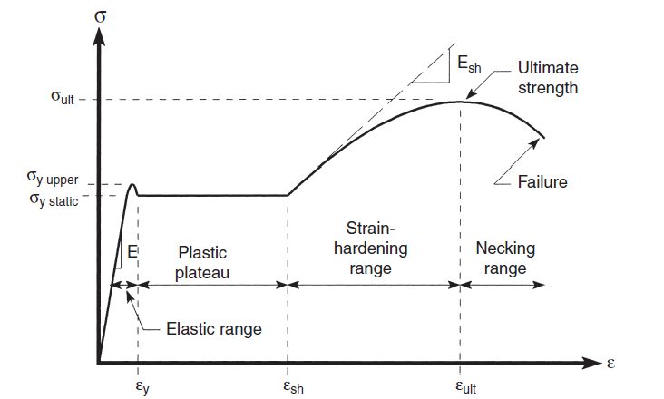
Figure 1: Stress-strain curve for a typical steel material [1]
A structure may fail for several reasons. Failure can occur once the applied stress exceeds the yield stress, $\sigma_\mathrm{y}$, particularly in brittle materials, or the ultimate tensile stress, $\sigma_\mathrm{ult}$, leading to substantial plastic deformation. However, stresses below $\sigma_\mathrm{y}$ can still cause failure when the structure is subjected to repeated or fluctuating loading over time, a mechanism known as fatigue.
Fatigue
Fatigue describes the progressive deterioration of a material's structural properties under cyclic or fluctuating stresses. Although each stress cycle is individually insufficient to cause rupture, repeated cycles can reduce strength and eventually lead to crack initiation or fracture. The American Society for Testing and Materials (ASTM) defines fatigue as follows [2]:
The process of progressive localized permanent structural change occurring in a material subject to conditions that produce fluctuating stresses and strains at some point or points and that may culminate in cracks or complete fracture after a sufficient number of fluctuations.
Fatigue develops gradually at localized areas subjected to cyclic stresses and strains, but failure may occur suddenly without visible warning. Local concentrations caused by load transfer, geometric discontinuities, temperature gradients, residual stresses, or material defects can initiate and propagate damage. Fatigue failure progresses through three stages:
Crack Initiation
Crack Propagation (Crack growth)
Ultimate failure (Fracture)
Fatigue is classified as high-cycle fatigue when low, primarily elastic stresses cause failure after typically more than a certain number of cycles, and as low-cycle fatigue when stresses exceed the yield strength and produce significant plastic deformation.
Fatigue begins at an internal or surface flaw at a location of stress concentration. Cyclic slip along crystallographic planes produces intrusions and extrusions that gradually develop into a crack. The crack initially advances along one of these slip planes, then turns to grow perpendicular to the principal normal stress until the remaining section fractures suddenly (refer to Figure 2 and Figure 3). This mechanism is particularly hazardous because a single load application produces no apparent damage, while conventional stress analysis may therefore incorrectly indicate that the structure is safe.
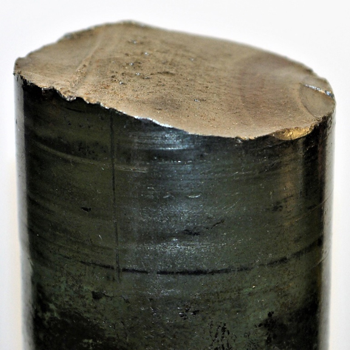
Figure 2: Crack surface showing fatigue growth
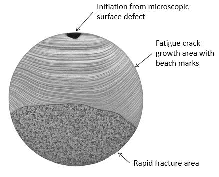
Figure 3: Crack surface showing fatigue growth
Damage calculation from stress cycle
The fatigue of materials subjected to cyclic loading is dependent upon not only the maximum stress level encountered, but also the range of the stresses applied. Generally, the greater the maximum stress and range, the greater the damage encountered.
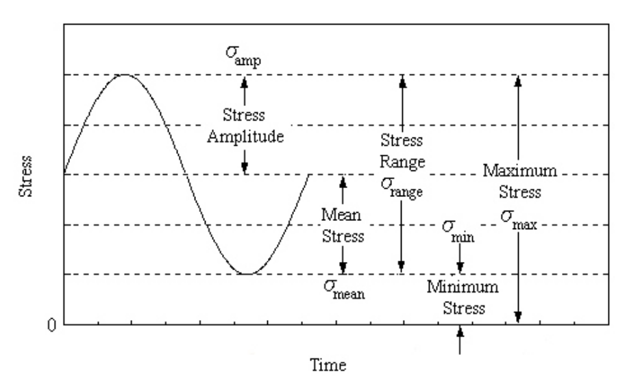
Figure 4: Cyclic Stress Range and definiions
Fatigue life is the number of stress cycles required to initiate a fatigue crack and subsequently fracture a component. It depends on the stress level and state, cyclic waveform, environment, and material condition.
For any material sample, the relationship between stress amplitude and fatigue life (in terms of number of cycles) can be shown on a linear or logarithmic scale. Fatigue life increases as stress amplitude decreases. For some materials, the curve approaches a horizontal endurance limit; below this limit, the material can theoretically withstand an infinite number of cycles.
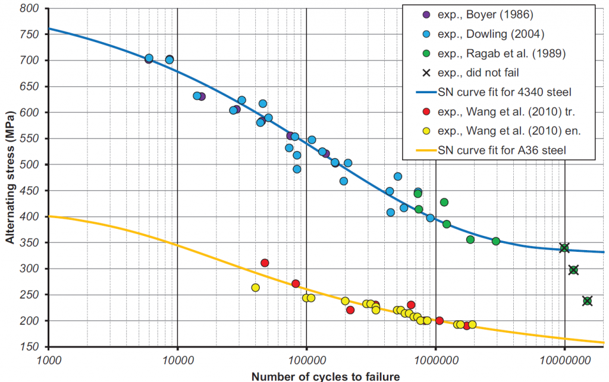
Figure 5: S-N curves of ASTM A-36 and AISI 4340 based on HCF data [3]
For many materials, a piecewise linear model can be fit to the S-N data expressed in the log-log domain. In this model, each linear piece is formulated by the Basquin expression: $\sigma_\mathrm{a} = \sigma'_\mathrm{f}(2\mathrm{{N_f}^b})$, where $\sigma_\mathrm{a}$ is the stress amplitude, $\sigma'_\mathrm{f}$ is usually referred to as the fatigue strength coefficient, $\mathrm{N_f}$ is the fatigue life, and $\mathrm{b}$ is Basquin’s exponent. In engineering terms, we often write it as: $\mathrm{N_f} \cdot \mathrm{S^m} = \mathrm{C}$ or $\mathrm{S} = \left(\frac{\mathrm{C}}{\mathrm{N_f}}\right)^{1/\mathrm{m}}$ where $\mathrm{S}$ is the stress amplitude, $\mathrm{m}$ is the Basquin's exponent, and $\mathrm{C}$ is a material constant. If the stress amplitude is known, the corresponding fatigue life can be obtained from the piecewise linear model. The estimated fatigue life is then used to compute damage values. Damage is usually defined as the inverse of the fatigue life, $\mathrm{D} = \frac{1}{\mathrm{N_f}}$. The total damage is then computed as the sum of the damage values for all stress cycles. The total damage can be used to estimate the remaining fatigue life of a component or structure.
For our demonstration, we have taken the Basquin's exponent as $\mathrm{m} = 3.0$, and the material constant as $\mathrm{C} = 2.0 \times 10^{11}$.
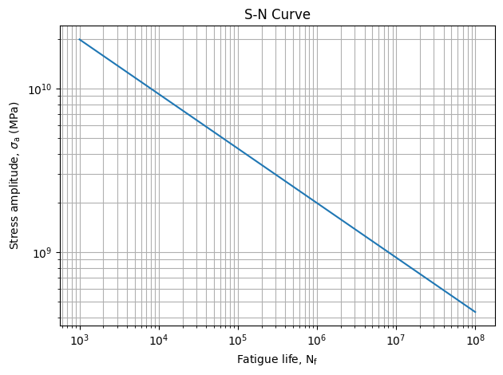
Figure 6: S-N curve for demonstration (log-log plot)
# Define typical structural steel S-N curve parameters
m = 3.0 # Fatigue exponent
C = 2.0e11 # Material constant (MPa scale)
# Stress cycles from 10^3 to 10^8
life = np.logspace(3, 8, 500)
# Correct Basquin relation: S = (C / N)**(1/m)
stress_amplitude = (C / life) ** (1 / m)
# Plot the S-N curve
plt.figure(figsize=(6, 4))
plt.loglog(life, stress_amplitude, label=r'$N_f \cdot S^3 = 2 \times 10^{11}$')
plt.xlabel(r"Fatigue life, $N_f$")
plt.ylabel(r"Stress amplitude, $\sigma_a$ (MPa)")
plt.title("S-N Curve (Corrected Basquin Relation)")
plt.grid(True, which="both", linestyle=':', alpha=0.6)
plt.legend()
plt.tight_layout()
plt.show()
Damage calculation from variable stress cycles
For variable amplitude loading, the damage calculation becomes more complex. The stress history is first analyzed to identify individual stress cycles, which may vary in amplitude and mean stress. Once damage from each individual stress cycle is calculated, the total damage can be computed using Palmgren-Miner's rule, which states that the total damage is the sum of the damage contributions from each cycle. The total damage can be expressed as:
where $\mathrm{D_total}$ is the total damage, $\mathrm{n_i}$ is the number of cycles at a specific stress level, and $\mathrm{N_{f,i}}$ is the fatigue life corresponding to that stress level.
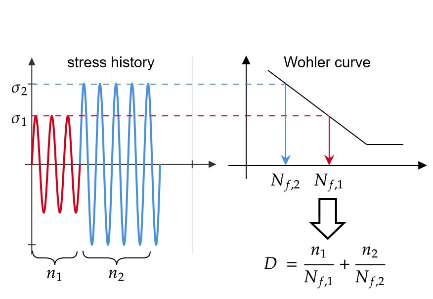
Figure 7: Damage calculation for variable stress cycles
Damage calculation from variable stress amplitudes
For a more general scenario, the stress history may contain cycles with varying amplitudes and mean stresses. In this case, the damage calculation involves identifying the stress cycles, determining their corresponding damage values, and summing the damage contributions from each cycle. The Rainflow Counting algorithm is a widely used method to identify and count stress cycles in a fluctuating stress history. It helps to determine the number of cycles at different stress levels, which can then be used to compute the corresponding damage values based on the S-N curve. The total damage is calculated by summing the damage contributions from all identified cycles, allowing engineers to assess the overall fatigue life of the structure under variable loading conditions. As an example, let's build a synthetic stress history to illustrate the fatigue analysis workflow. The stress history is shown in Figure 8 and consists of a series of fluctuating stresses over time:
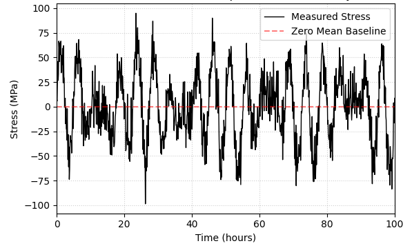
Figure 8: Synthetic Stress Dataset
np.random.seed(42)
# Generate time series representing a loading duration
time = np.linspace(0, 100, 1000) # 1000 points representing simulated time
# Define multiple signal components representing variable amplitude loading
low_freq_trend = 10 * np.sin(2 * np.pi * 0.05 * time)
mid_freq_fluctuation = 60 * np.sin(2 * np.pi * 0.2 * time) * np.cos(2 * np.pi * 0.02 * time)
high_freq_noise = np.random.normal(loc=0, scale=15, size=len(time))
# Combine components to form the final stress history (in MPa)
stress_history = low_freq_trend + mid_freq_fluctuation + high_freq_noise
Fatigue Analysis Workflow
The objective of fatigue analysis is to calculate fatigue life from a stress time series and compute the total damage. The task can be divided into two main parts:
Rainflow counting
Find total damage based on the Wohler curve and the Palmgren-Miner rule
Rainflow counting is used to extract the number of cycles $\mathrm{n_i}$ and the stress amplitude $\sigma_\mathrm{i}$ from the stress history applied to the component. The rainflow counting consists of following steps:
Hysteresis filtering: Remove cycles whose contribution to the total damage is insignificant.
Peak-valley filtering: Identify the local maxima and minima in the stress history to create a sequence of peaks and valleys.
Cycle counting: Apply the Rainflow Counting algorithm to the peak-valley sequence to identify and count the stress cycles, including their amplitudes and mean stresses.
Damage calculation: For each identified cycle, calculate the corresponding damage using the S-N curve and Palmgren-Miner's rule, then sum the damage contributions from all cycles to obtain the total damage.
Let's understand each step of Rainflow counting in detail.
Hysteresis Filtering
Hysteresis filtering is a technique used to remove cycles from the stress history that have a negligible contribution to the total damage. It takes input a threshold in addition to the stress history.
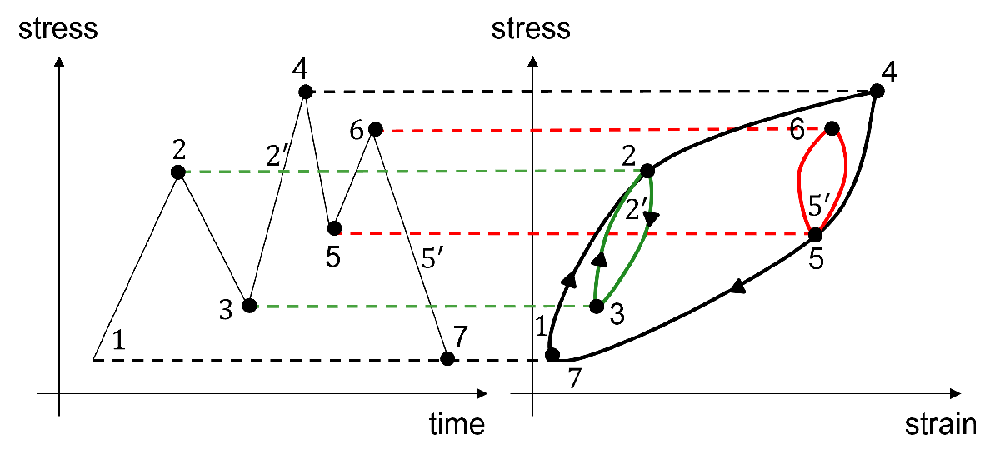
Figure 9: Hysteresis Filtering Technique
We have applied Hysteresis Filtering to our synthetic dataset and plotted a particular section of the entire time history:
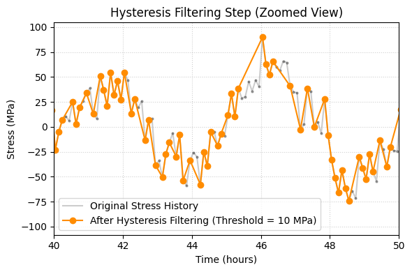
Figure 10: Hysteresis Filtering applied to our Synthetic dataset
def hysteresis_filter(signal, threshold):
## Removes small fluctuations smaller than the threshold
if len(signal) == 0:
return np.array([])
filtered = [signal[0]]
for value in signal[1:]:
if abs(value - filtered[-1]) >= threshold:
filtered.append(value)
return np.array(filtered)
Peak Valley Filtering
Peak-valley filtering is a technique used to identify the local maxima (peaks) and minima (valleys) in the stress history. This process simplifies the stress history by creating a sequence of peaks and valleys, which can then be used for cycle counting.
We applied Peak-Valley Filtering to our filtered synthetic dataset and plotted a particular section of the entire time history:
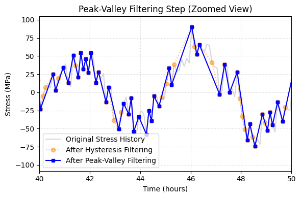
Figure 11: Peak-Valley Filtering applied to our filtered synthetic dataset
def peak_valley_filter(signal):
## Keeps only local maxima and minima, removing intermediate points
if len(signal) < 3:
return np.array(signal)
filtered = [signal[0]]
for i in range(1, len(signal) - 1):
prev_val, curr_val, next_val = signal[i-1], signal[i], signal[i+1]
# Check if the current point is a local peak or valley
if (curr_val > prev_val and curr_val > next_val) or (curr_val < prev_val and curr_val < next_val):
filtered.append(curr_val)
filtered.append(signal[-1])
return np.array(filtered)
Rainflow Cycle Counting
Rotate the loading history 90° clockwise, placing the earliest point at the top. The result resembles a series of roofs.
Peak valley filtering has removed all intermediate points and retained only successive peaks and valleys. These points mark stress reversals.
Imagine rain falling from each peak on the right-hand side of the rotated history.
Continue each rainflow until one of these conditions is reached:
It reaches the end of the history.
It meets an earlier rainflow falling from above.
It reaches a peak equal to or greater than the starting peak.
Repeat the process for the valleys.
For every extracted half-cycle, calculate the stress range: $\Delta\sigma = \sigma_{\max} - \sigma_{\min}$
Pair equal and opposite half-cycles to form complete cycles.
Count the paired cycles and retain any unmatched half-cycles as residual cycles.
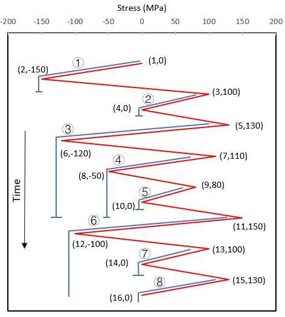
Figure 12: Rainflow for peaks
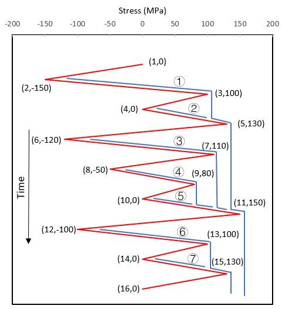
Figure 13: Rainflow for valleys
The cycle information can be summarized in a table, which includes the cycle number, stress range, mean stress, and the number of cycles for each identified cycle:
Cycle ID
Min Stress Index
Min Time Point (hr)
Min Stress (MPa)
Max Stress Index
Max Time Point (hr)
Max Stress (MPa)
Stress Range (MPa)
Allowable Cycles ($\mathrm{N_f}$)
Damage Contribution ($\mathrm{D_i}$)
63
37
3.704
-73.740
234
23.423
94.900
168.640
41701
2.398e-05
227
708
70.871
-80.230
738
73.874
74.280
154.510
54215
1.844e-05
108
442
44.244
-57.870
284
28.428
86.860
144.730
65969
1.516e-05
165
544
54.455
-79.120
561
56.156
64.410
143.530
67645
1.478e-05
224
933
93.393
-78.220
961
96.196
63.790
142.010
69835
1.432e-05
211
760
76.076
-76.110
785
78.579
64.680
140.790
71673
1.395e-05
126
485
48.549
-74.050
515
51.552
61.330
135.390
80589
1.241e-05
54
216
21.622
-55.530
59
5.906
64.380
119.920
115982
8.622e-06
210
815
81.582
-54.660
836
83.684
60.000
114.670
132656
7.538e-06
163
668
66.867
-53.790
691
69.169
58.530
112.320
141152
7.085e-06
48
163
16.316
-49.060
179
17.918
53.650
102.710
184594
5.417e-06
101
307
30.731
-46.990
420
42.042
54.540
101.520
191131
5.232e-06
153
587
58.759
-43.730
614
61.462
48.650
92.380
253684
3.942e-06
37
79
7.908
-39.760
113
11.311
41.850
81.610
368023
2.717e-06
207
861
86.186
-23.250
909
90.991
53.530
76.780
441781
2.264e-06
A histogram plot of the stress ranges can also be generated to visualize the distribution of stress cycles and their corresponding damage contributions:
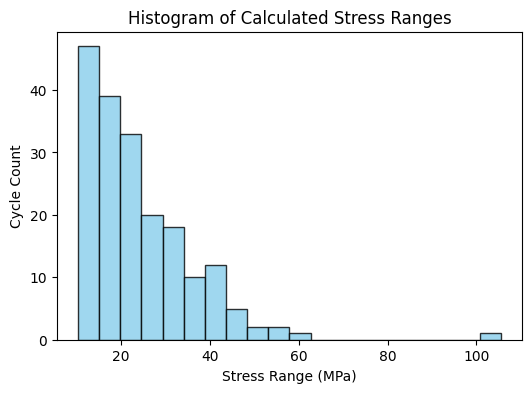
Figure 14: Histogram of Stress Ranges from Rainflow Counting
def cycle_counting(extrema):
## Custom simplified cycle counting (One-Range Counting)
## Identifies cycles based on matching successive ranges
points = list(extrema)
cycles = []
i = 0
while i < len(points) - 2:
# Calculate successive ranges
range1 = abs(points[i+1] - points[i])
range2 = abs(points[i+2] - points[i+1])
if range2 >= range1:
# Record a cycle
mean = (points[i] + points[i+1]) / 2.0
cycles.append((range1, mean))
# Remove the pair that formed the cycle
points.pop(i+1)
points.pop(i)
# Reset pointer to evaluate the context again
i = max(0, i - 1)
else:
i += 1
return cycles
Finally, as we get the damage contribution from each cycle, we can compute the total damage using Palmgren-Miner's rule. Inverting the total damage gives us the estimated fatigue life of the component under the given stress history. This comprehensive workflow allows engineers to assess the fatigue performance of steel structures and make informed decisions regarding design and maintenance.
# Calculate and display cumulative damage
total_damage = damage_df["Damage Contribution (D_i)"].sum()
print(f"Total Cumulative Fatigue Damage (D): {total_damage:.3e}")
if total_damage > 0:
estimated_lifetime_hours = 1.0 / total_damage
print(f"Estimated fatigue life under this stress profile: {estimated_lifetime_hours:,.0f} hours")